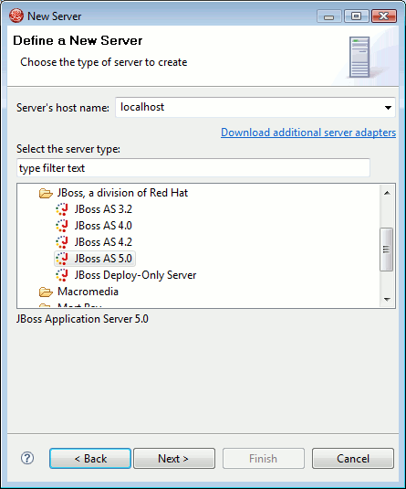

< Main Index Seam Tools News >
Deployment |
|
|
Safer incremental deployment |
This version starts telling JBoss AS to stop it's scanning for auto-deployment while files are being copied to the deployment location. When the copy is completed JBoss AS is told to resume and the files will be auto-deployed. This will reduce the risk of having partial deployments being picked up by the server. |
Servers |
|
|
JBoss 5 |
There is now an AS adapter that can be used with JBoss AS 5.  |